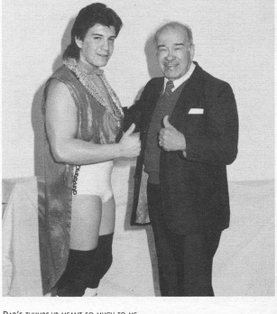
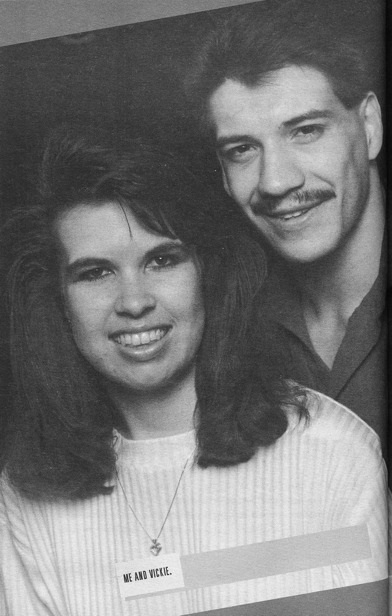

Книги
КнигиГлава 6
Перевод Александра Суменко для VSplanet.net
Мой официальный дебют в рестлинге состоялся 27 июня 1987 года на арене Auditorio Municipal в Хуаресе. Я выступил в команде с лучадором по имени Математико (у него по всей маске были разбросаны цифры). Мы боролись против команды в составе Эль Викинго и Флама Роха.
Меня представили как Эдди Гори Герреро (Eddy Gory Guerrero). Все хотели увидеть последнего отпрыска Гори Герреро. Отец порекомендовал мне писать имя «Eddy». Он знал, что оно будет выделяться по сравнению с обычным написанием (которое я использую сейчас). Лично я предпочитаю вариант «Eddy». Иногда в наши дни мне приходится напоминать себе, что мое имя пишется «Eddie».
Я сильно нервничал, но матч прошел неплохо. Мы с Математико победили, что, естественно, укрепило мою уверенность. Зрители хорошо меня поддерживали, учитывая, что я был молодым парнем, не знающим, что он делает. Они хотели увидеть, как очередной Герреро поддерживает честь семьи. Я жил с этой ношей всю жизнь, но тогда я впервые должен был преодолеть это давление, не только в своем сердце, но и на глазах у публики.
С того момента я следовал совету отца и выступал как можно чаще.
— Заработай столько опыта, сколько сможешь, — сказал он мне. — Опыт ничем не заменишь. Он бесценен.

Поддержка отца значила для меня все
Так я и делал. Я выступал там, где получалось найти работу. Больше я ни о чем не тревожился. Работая в Хуаресе, я выступал дважды, а иногда и трижды за вечер. Я работал в Хуаресе, а потом ехал на другое шоу в пригороде и повторял все сначала.
Стоит ли говорить, что много денег на этом заработать было невозможно. Иногда мой доход даже не окупал затраты. Иногда мой доход приносил мне лишь кружку пива и бутерброд. Но мне было плевать. Я просто хотел заниматься рестлингом.
Я работал в каждом большом городе и небольшом городишке по всей Мексике. Я боролся на аренах для родео, я работал в зданиях, где обычно проводились петушиные бои. Я выступал на матах из песка и на рингах из бетона. Я работал на одном шоу и, приняв бамп, почувствовал, словно моя спина раскололась надвое. «Ну уж нет, — подумал я. — Сегодня я не принимаю бампы».
Уходя после шоу из здания, я увидел, как разбирают ринг. Там была большая бетонная платформа и небольшой слой опилок под полотном ринга.
В наши дни рестлеры подписывают контракт с WWE после нескольких месяцев тренировок в OVW (Ohio Valley Wrestling), подготовительной площадке WWE, и считают, что они отдали свой долг бизнесу. Они ночуют в номерах дорогих отелей и ездят за рулем арендованных автомобилей, а потом жалуются, как тяжело им все это досталось. Это бесит меня. Они должны быть благодарны. Им платят за их же обучение. Только Господу известно, как тяжело было мне.
Когда я начинал в рестлинге, вечеринки были такой же неотъемлемой частью индустрии, как и действо в ринге. Если ты не пил, тебя не считали своим. Отношение к трезвенникам было презрительным, вроде: «О, так ты не ходишь в туалет с большими мальчиками, да?»
В Мексике парни иногда выпивали еще до выхода на ринг. У каждого была своя «quartito» (маленькая бутылочка), из которой они пили прямо перед шоу. Это разряжало обстановку.
У меня не возникло проблем с адаптацией к такому стилю жизни. Бурные вечеринки были для меня обычным делом, еще лет с 16. Я не знал другого способа жизни. Напиться и накуриться каждый вечер — это было для меня так же естественно, как проснуться и позавтракать утром.
Отец заметил мой образ жизни и однажды решил поговорить со мной:
— Сын, — сказал он, — я поделюсь с тобой кое-чем. Я не рассказывал об этом даже твоим братьям. Раньше я выпивал банку пива после каждого матча. Вскоре я выпивал уже по три банки. А три перешли в шесть. Вскоре я понял, что это ничего мне не дает. От этого мне становилось только хуже. Я становился вялым. Выпивка мешала моей карьере в рестлинге. И я перестал.
Папа всегда был хорошим учителем. Он не заставлял меня бросить пить. Он просто поделился своим опытом в надежде, что я уясню урок. К сожалению, я его не слушал.
Очень скоро мое умение найти приключений на свой зад едва не окончило мою едва начавшуюся карьеру.
Чаво, Тури и я отправились гулять после матчей в Хуаресе. Мы веселились в каком-то клубе и никому не мешали; когда мы пили возле стойки бара, какой-то странный тип начал на меня наезжать. Я слушал его словесный поток несколько минут, а потом разозлился и сбил его с ног.
Тури обернулся на шум и увидел того типа на полу, готового вскочить на ноги и броситься на меня. Он сильно пнул парня под зад, но тот все равно смог подняться и кинуться ко мне. Он не собирался сдаваться, продолжая выводить меня из себя. Я уже собирался врезать ему, когда Чаво встал между нами. Он сорвал очки с лица этого типа и выкинул их прямо на улицу. Эта потасовка могла перерасти в серьезную разборку, но кто-то крикнул, что едет полиция, поэтому мы втроем скрылись через черный ход.
На следующий день наши лица красовались на передовице газеты Хуареса. Заголовок был такой: «Жестокая агрессия от Чаво Герреро, Эдди Герреро и Хищника». Последним был Тури — в то время он выступал под прозвищем Хищник. Оказалось, что до меня докапывался заместитель председателя комиссии по боксу и борьбе в Хуаресе. В статье описывалось, как трое крутых рестлеров напали на бедного, беззащитного комиссара, хотя на деле все ограничилось несколькими точками да пинком под зад.
В результате Чаво, Тури и меня отстранили от рестлинга в Хуаресе. Мой отец сделал несколько звонков, и было организовано собрание. Это было ужасно, мне пришлось просить вернуть мне мою жизнь. Заместитель председателя оказался настоящим козлом. Он просто не хотел отставать от меня. Иными словами, мне пришлось перецеловать много задниц и попросить у него прощения на глазах у всей комиссии. Это было унизительно, но я был вынужден это сделать. Также мне пришлось подписать бумаги, которые запрещали мне прикасаться к нему или кому бы то ни было еще. И, естественно, мне выписали штраф. В Мексике все всегда заканчивается штрафом.
Я постоянно ввязывался в драки в Хуаресе, почти каждый раз, когда выступал там. Иногда драки начинались по ходу матча и перетекали в раздевалку. В то время я искренне полагал, что в этом нет ничего необычного. Драки были обычным делом. Это было частью вечеринок в Мексике.
В каком-то смысле я искал неприятностей. Чаще всего это происходило с парнями, которые были больше меня. Но я сходился на кулаках с любым, кто посмотрит на меня косо. Мне было плевать, кто это.
Однажды в Эль-Пасо приехало несколько моих друзей (Тури, Марк Грэм и парень по имени Чарльз, с которым я раньше работал), чтобы посмотреть мой матч. Естественно, ближе к ночи мы пили текилу в каком-то стрип-баре. Не помню, как все завязалось, но бац! И мы с Тури колошматим друг друга посреди улицы. Пока мы выбивали друг из друга всю дурь, вокруг нас собралась большая толпа, кричавшая: «Эдди! Эдди!» Кто-то разнимал нас, но мы изворачивались и снова бросались друг на друга — бум, бум, бум!
Пока мы дрались, кто-то пырнул Чарльза раскладным ножиком. Ничего серьезного задето не было, но кровь лилась из него рекой. Мы поняли, что пора сматываться, пока не приехали копы, поэтому мы с Марком сели в одну машину, а Тури и Чарльз в другую. Я был покрыт кровью, поэтому, подбросив меня к дому, Марк сказал: «Давай я протру тебя». Но вместо вытирания лица он принялся счищать кровь с моих сапог. Вот что значит хороший друг: он знал, что я больше беспокоюсь о своих любимых ковбойских сапогах, чем о своем лице!
В это же время Тури отвез Чарльза в аптеку, где они купили перекись водорода и бинты, чтобы обработать рану. Оказалось, что рана была слишком сложной, и они отправились на поиски врача, который бы зашил Чарльза.
На следующий день Тури заехал ко мне домой, и мы не смогли вспомнить, с чего началась потасовка. Мы поцеловались и простили друг друга, а потом пошли гулять и снова напились.
Фанаты рестлинга в Хуаресе очень эмоциональные. Здание, где мы работали, называлось Gymnasia Municipal. Внутри все было организовано не так, как принято на шоу в Америке. Во-первых, там не было ограждений. Ничто не отделяло ринг от первых рядов, поэтому часто зрители вмешивались в матчи или рестлеры начинали драться с фанатами. На самом деле, такое случается постоянно!
Фанаты в Мексике относятся к рестлингу очень серьезно. Они без проблем проявляют ненависть по отношению к рестлеру, который им не нравится, обычно бросая в него мусор, пока он идет к рингу. Чем только в меня не попадали: от начос и пива до камней, горстей песо и пакетов с мочой. Как минимум три раза я становился жертвой слезоточивого газа.
Однажды я принял бамп на апроне, и пока я корчился от боли, кто-то кинул в меня памперс, полный детских какашек. В меня не попали, но это было очень близко. Это был один из тех моментов, когда ты начинаешь думать: «И это моя жизнь?»
В меня бросали не только камни и грязные памперсы, часто я становился жертвой ударов. Бывали такие вечера, когда мне приходилось с боем пробиваться сквозь толпу, просто чтобы вернуться в раздевалку. У нас была охрана, но когда зрители пытались убить тебя, от них было мало толка.
Даже полицейские в Мексике вмешиваются в эти дела. Однажды я работал в Тихуане хилом, а когда я вернулся в раздевалку, один из рестлеров оттащил меня в сторону. «Смотри, — сказал он, демонстрируя кастет. — Один из копов дал мне его и сказал использовать против тебя».
Отец научил меня справляться с таким хаосом.
— Что бы ты ни делал, — говорил отец, — не беги. Если ты побежишь, они подумают, что ты испугался, и съедят тебя заживо.
Он попросил меня не беспокоиться насчет фанатов, которые кричат и матерятся.
— Следи за тихонями, — говорил он, — у которых сумасшедшие глаза. Вот о них нужно беспокоиться.
Когда тебя бьют со всех сторон, ты не сможешь напасть на каждого. Если попытаешься, костей не соберешь. Отец объяснил мне, что нужно схватить одного и выбить из него весь дух. И не останавливаясь, тащить его с собой в раздевалку, нанося удары на каждом шаге.
Избивая одного человека, ты влияешь на психологию людей. Остальные фанаты, видя происходящее, думают: «Черт, не хотел бы я, чтобы мой зад надрали так же, как этому бедняге!» Кроме того, когда они видят, как избивают их приятеля, они скорее предпочтут вызволить его из беды, чем продолжить ругаться с тобой. Мне всегда было тяжело делать это, но тут был выбор между мной и ними.
Дух Хуареса живет во мне до сих пор. Я часто свожу с ума Джимми и Джимми — двух замечательных охранников WWE. Они знают, что я не стану сдерживаться, если на меня наедет фанат. Я научился сдерживать себя в последние годы, но если кто-то бросает в меня стакан с пивом, мой инстинкт подсказывает мне подойти к ограде и преподать нахалу урок.
Думаю, все дело в моих относительно небольших габаритах. Зрители смотрят на меня с мыслями: «Он не такой большой. Я смогу побороть его». Когда выступает Биг Шоу или Гробовщик, фанаты не спешат выбегать на ринг.
Свой первый титул я выиграл в команде с Мандо и Чаво, это был пояс чемпионов мира WWA в боях трио. Мы победили «Американских наемников» — Билла Андерсона, Тима Паттерсона и Луи Спиколи. Бои трио очень популярны в луча-либре. Они проводятся даже чаще, чем привычные американскому зрителю командные матчи два на два.
Первый личный пояс я выиграл в Хуаресе, став чемпионом в тяжелом весе организации Latin American Wrestling Association. Я победил молодого талантливого кубинца по имени Коннан, а спустя пару дней проиграл титул ему. Я не помню, у кого Коннан выиграл пояс перед нашим боем. В независимых федерациях букеры зачастую подходят к рестлеру и говорят:
— Так, сегодня ты станешь чемпионом.
— Я?
— Ну да, и сегодня же ты проиграешь пояс тому-то или тому-то.
Коннан (также известный как Карлос Ашенофф) впоследствии стал одной из величайших звезд луча-либре, мексиканским Халком Хоганом. Мы работали вместе долгие годы, вплоть до WCW. Сначала у нас были проблемы, но, когда мы узнали друг друга лучше, он стал помогать мне, как мог. Он оказал мне большую услугу в самом начале моей карьеры.
Моей целью, как и для любого другого молодого рестлера, было обретение популярности. Я пытался впечатлить каждого: от своего оппонента до промоутеров и фанатов. Я был слишком зелен и полагал, что нужно просто сделать большое количество высоких спотов — акробатических приемов в воздухе, которые гарантированно поднимут настрой зрителей, но никак не помогут психологии матча и истории, рассказываемой на ринге.
Существует много различий между мексиканским и американским рестлингом. Например, в Мексике слишком полагаются на приемы в воздухе. Мексиканские рестлеры часто делают сложный акробатический прием, а потом поднимают руки, ожидая аплодисментов. Мой отец ненавидел такую показуху.
— Чтобы я никогда не видел, как ты это делаешь, — твердил он.
— Но почему? — спрашивал я.
— Потому что ты не клоун, — отвечал папа. — Если тебе аплодируют за сложный прием, значит, ты это заслужил. Не проси их одобрения, заслужи его.
Я быстро понял, что одних акробатических трюков недостаточно. Дело в том, как и когда их использовать. Только психология помогает популярности рестлера, если его работа в ринге выполнена умело и с чувством.
— Выполняй все максимально правдоподобно, — говорил отец. — Если что-то выглядит неправдоподобно, ты должен сделать это правдоподобным.
Для меня такое определение психологии кажется самым верным — нужно сделать нереалистичное правдоподобным. Невозможно быть сбитым с ног, упасть, вскочить на ноги, запрыгнуть на стойку ринга и сделать сальто. Это делает первоначальный прием бесполезным. Нужно продать этот прием. Нужно сделать его реальным.
Луча-либре — беспощадный бизнес.
Если хочешь выжить в Мексике, будь готов драться. В первые мои три месяца мне приходилось использовать кулаки в каждом матче. Конечно, мы работали, но при этом соперник регулярно проводил и настоящие удары.
Стоило открыться, и тут же в тебя летит удар. Прямо в лицо.
Конечно, нельзя оставлять удар в челюсть безнаказанным. Если ты пропускаешь настоящие удары, каждый захочет взять над тобой верх. Тебя прожуют и выплюнут.
В каком-то смысле это похоже на тест, есть ли у тебя мужество стать рестлером. В то же время существует настоящая враждебность, словно ты пытаешься занять их место.
Очень часто я ввязывался в драки с другими рестлерами. Однажды это произошло в ходе командного боя. Я удерживал одного соперника прогибом, и его напарник выбежал разбить захват и пнул меня что было силы прямо в область почки. Боже, это было больно! Мне пришлось выкатиться за ринг, чтобы отдышаться, прежде чем продолжать бой. Самое забавное в том, что тот парень, который пнул меня, теперь один из моих лучших друзей. Вот так работает эта индустрия.
В другой раз я выступал в Тихуане. В те времена ринги были ужасного качества. Они были твердыми, как бетон, и далеко не ровными. Мой соперник поднял меня на суплекс и, заканчивая прием, когда я приземлялся на мат, специально приземлил меня плашмя на спину. Бам! Я не чувствовал ног в течение почти 2 минут.
Мне пришлось попросить соперника выкатить меня за ринг, потому что сам я не мог двигаться. Постепенно к ногам вернулась чувствительность, но в те долгие 2 минуты я был не на шутку испуган.
До сих пор тот бамп доставляет мне проблемы. Если я неправильно приму прием, или неудобно врежусь в угол ринга, или просто неудачно приземлюсь после прыжка, боль возвращается и беспокоит меня неделями.
Во время моей первой поездки в Мехико на меня обратили внимание букеры EMLL. Они увидели во мне потенциал и предложили работать на них.
EMLL контролирует большую часть мексиканских территорий, отдавая своих рестлеров в аренду независимым промоутерам, чтобы те получали практику. Рестлеры жили в Мехико, и оттуда разъезжались по всей стране.
Я решил принять предложение и посмотреть, что произойдет. В каком-то смысле я начинал с нуля. Я прошел по карьерной лестнице в Хуаресе, но в Мехико я был никем.
Кроме выступлений на регулярных шоу EMLL на Arena Mexico, я съездил и на несколько выездных шоу. Часто мой маршрут проходил через Акапулько, где я работал почти каждые выходные.
От Мехико до Акапулько около 8 часов на автобусе. Обычно мы выезжали под вечер, веселились в автобусе всю ночь, приезжали в город к 8 утра и заселялись в какой-нибудь дешевый отель, чтобы немного поспать.
Как-то раз я поехал с командой Los Hermanos Dinamita (Братья-Динамит) — Сьен Карас и Маскара Ано 2000. Приехав в Акапулько, мы отправились в привычный отель, но, к своему удивлению, обнаружили, что он забит под завязку. Менеджер сказал, что мы не найдем ни одного свободного номера в городе, даже в самых дорогих гостиницах. Мы абсолютно забыли, что это были Пасхальные выходные!
Мы были измотаны до предела, поэтому поехали на арену, чтобы поспать хоть несколько часов в раздевалке. Как ни странно, в раздевалке было только две скамейки. Поскольку я был самым маленьким из нас троих, я бы никак не смог выбить для себя место на скамейке. Я расстелил на полу полотенце, подложил сумку вместо подушки и моментально заснул.
Мой отдых продолжался недолго. Я счастливо дремал, когда почувствовал, как что-то ползет по моей груди. Сначала я решил, что кто-то надо мной подшучивает. Я открыл глаза и обнаружил на груди адского таракана, самого большого, которого я когда-либо видел! Клянусь, он был размером с крысу! Я подскочил — аааааа — и сбросил его! Ни с чем не сравнимое отвращение!
Я не знал, что делать. Я только знал, что больше не собираюсь ложиться на пол! Но я был измотан и ужасно хотел спать. И тогда меня осенило — ринг.
Я вышел в зал и закатился на ринг, где и заснул. Минут через 20 я почувствовал мощный толчок! Сев, я увидел молодых рестлеров, выполняющих утреннюю разминку, рядом со мной!
«Вот отстой, — подумал я, — мне надо поспать!» У меня почти не оставалось вариантов. Я решил убраться оттуда поскорее — надел плавки и отправился на пляж.
Добравшись до пляжа, я купил пива и мидий. Их ловили прямо там, и они были восхитительно вкусными! Я сидел на красивом белом песке, пил пиво и закусывал мидиями, а потом улегся на полотенце и заснул.
Я проспал долго. Очень долго. Пока я спал, я полностью обгорел. Я ни разу не перевернулся, поэтому спереди был красным, как рак.
Это было ужасно. Кожа горела, как в аду, меня тошнило, как бывает при солнечных ожогах. Кроме того, я еще пил и спал на пляже!
Когда я добрался до арены, увидевшие меня рестлеры расхохотались. Стоит ли говорить, что в раздевалке надо мной смеялись весь вечер. Некоторые пытались помочь мне, смазав мое тело уксусом, чтобы уменьшить боль, но это мне не помогло. Я сгорел, как тост.
Отправляясь на матч с Los Hermanos Dinamita, я понимал, что мое дело плохо. Они не могли не применять чопы, оставлявшие большие белые отпечатки на моей пурпурного цвета груди. Боже, такой боли я не испытывал еще никогда! Вспоминая это, клянусь, я до сих пор ощущаю жжение!

Я и Викки